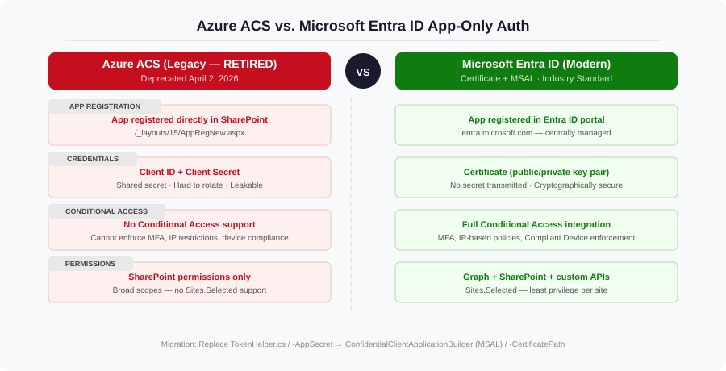
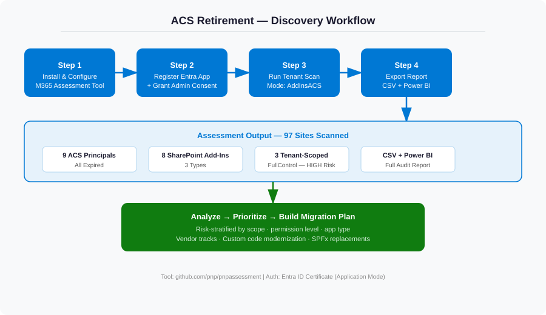
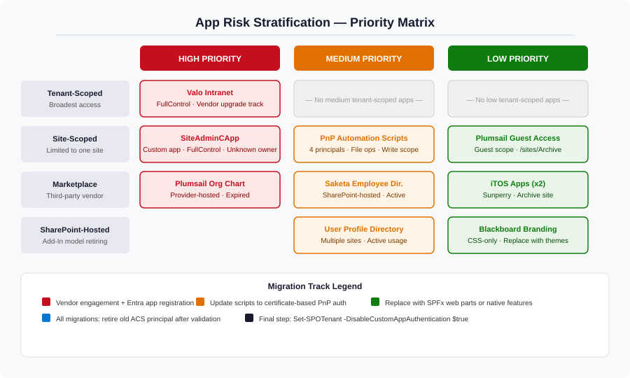
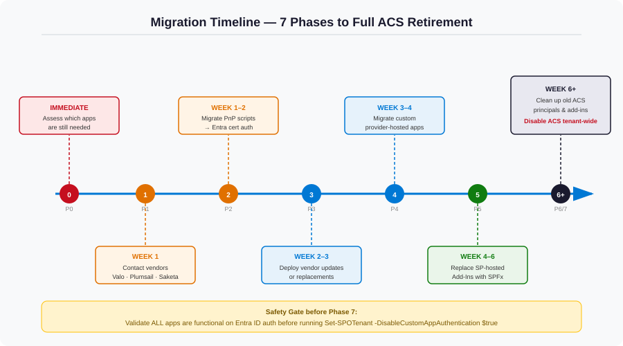

In early 2026, Microsoft reached a long-announced milestone: Azure Access Control Service (ACS) for SharePoint was officially retired on April 2, 2026. When a customer reached out with the deadline weeks away, no inventory of which apps used ACS, and a few apps already broken, we turned that uncertainty into a structured, prioritized, fully documented migration — in a matter of days. This is how.
Step 1 — Understand what you're dealing with
Before writing a single line of migration code, I needed to understand exactly what ACS was and why it was worth solving properly rather than patching.
What is Azure ACS?
Azure ACS is a legacy token-based authentication system that SharePoint supported for app-only access. An app registered directly with SharePoint (via /_layouts/15/AppRegNew.aspx), received a Client ID and Client Secret, and used those to obtain access tokens. Microsoft's TokenHelper.cs class — shipped with classic provider-hosted add-in templates — abstracted all of this. In PowerShell, it looked like this:
# Legacy ACS-based PnP connection
Connect-PnPOnline -Url "https://contoso.sharepoint.com/sites/MySite" `
-AppId "<client-id>" `
-AppSecret "<client-secret>"Why was it retired?
ACS has fundamental security limitations:
- No Conditional Access support — you can't enforce MFA, IP restrictions, or device compliance on an ACS token.
- Shared secrets — client secrets are easy to leak and hard to rotate at scale.
- No Entra ID integration — ACS principals don't appear in Entra ID, making governance nearly impossible.
- Broad permissions by default — no
Sites.Selectedequivalent; tenant-scoped apps gotFullControlacross everything.
Microsoft Entra ID solves all of these. The retirement was announced years in advance — but that didn't mean organizations were ready.

Step 2 — Discovery: finding every ACS-dependent app
Every migration starts with one question: what do we actually have? For this customer the answer was unknown — over a decade of SharePoint, multiple third-party products, developer teams that had come and gone, and a pile of automation scripts nobody fully owned.
The answer was the Microsoft 365 Assessment Tool — an open-source tool from the PnP community (github.com/pnp/pnpassessment).
Setting up the assessment
The tool authenticates using a dedicated Entra ID app registration. I set this up with PnP PowerShell:
Register-PnPAzureADApp `
-ApplicationName "Microsoft365AssessmentToolForACS" `
-Tenant "contoso.onmicrosoft.com" `
-Store CurrentUser `
-GraphApplicationPermissions "Sites.Read.All", "Application.Read.All" `
-SharePointApplicationPermissions "Sites.Read.All" `
-GraphDelegatePermissions "Sites.Read.All", "Application.Read.All", "User.Read" `
-SharePointDelegatePermissions "AllSites.Read" `
-DeviceLoginThis created a self-signed certificate in the Windows certificate store and registered the Entra app in one step. After capturing the App ID and certificate thumbprint, I granted admin consent via the Entra portal.
Running the scan
With the app configured, the scan was a single command:
.\microsoft365-assessment.exe start `
--mode AddInsACS `
--authmode application `
--tenant contoso.sharepoint.com `
--applicationid <app-id> `
--certpath "My|CurrentUser|<thumbprint>"I monitored progress with .\microsoft365-assessment.exe status and exported the final report once complete:
.\microsoft365-assessment.exe report --id <assessment-id>
What the assessment revealed
The scan covered 97 sites and produced a full set of CSVs plus a Power BI .pbit template. The results were eye-opening:
| Finding | Count | Status |
|---|---|---|
| ACS Principals | 9 | All expired |
| SharePoint Add-Ins | 8 | Mixed — some active |
| Tenant-scoped principals | 3 | FullControl — highest risk |
| SharePoint-hosted Add-Ins | 5 | No ACS dependency, but also retiring |
The key insight: all 9 ACS principals had already expired. The apps were either already broken or about to cease functioning. The customer had been running on borrowed time without knowing it.
Step 3 — Analysis: reading between the lines
Raw scan data is just a starting point. The real work is interpretation.
Not all apps are equal
I categorized the discovered apps along two dimensions: scope (tenant vs. site) and app type (vendor product vs. custom code vs. PnP script vs. SharePoint-hosted add-in). The intersection of those dimensions drives both risk and migration path.

FullControl principals top the list; site-scoped scripts have a limited blast radius.- Tenant-scoped principals are the highest priority — they hold
FullControlacross the entire tenant. A misconfigured or compromised token here is catastrophic. - Site-scoped custom principals are medium priority — they do real work (file operations, automation), but their blast radius is limited.
- SharePoint-hosted add-ins are a separate track — they don't use ACS for auth, but the Add-In model itself is retiring alongside ACS, so they must move to SPFx regardless.
Step 4 — Building the migration plan
With inventory and risk stratification in hand, I built a four-track migration plan. Each track has a different technical path and a different owner.
Track A — Vendor products (Valo Intranet, Plumsail, Saketa)
The rule here: engage the vendor before writing a single line of code. For products like Valo Intranet, the vendor (now Staffbase after acquiring Valo) has their own Entra ID migration path. Hacking around a vendor product's ACS dependency is a maintenance nightmare. The right steps:
- Contact the vendor and confirm their Entra ID-compatible version.
- Plan the upgrade to their modern release.
- Register a new Entra app with appropriate permissions (
Sites.FullControl.Allfor Valo, scoped appropriately for others). - Upload the certificate, configure the product, test on a pilot site.
- Decommission the old ACS principal only after full validation.
For marketplace add-ins where the vendor had no migration path (or the product was abandoned), I documented native Microsoft alternatives:
| Legacy Add-In | Modern Replacement |
|---|---|
| Plumsail Org Chart | Microsoft Visio Org Chart, SPFx Org Chart Web Part |
| Saketa Employee Directory | Microsoft Search (People vertical), Viva Engage, SPFx People Web Part |
Track B — Custom app-only code (SiteAdminCApp)
One tenant-scoped principal had a mysterious name: SiteAdminCApp. No documentation, no known owner — a classic scenario in long-lived tenants. The first task was identifying the owner by correlating the App ID against development team records. The code modernization pattern is straightforward, and it was also the moment to right-size permissions:
Before (ACS — TokenHelper.cs):
var accessToken = TokenHelper.GetAppOnlyAccessToken(
TokenHelper.SharePointPrincipal, siteUrl, realm);After (Entra ID — MSAL):
var app = ConfidentialClientApplicationBuilder
.Create("<client-id>")
.WithCertificate(certificate)
.WithAuthority($"https://login.microsoftonline.com/<tenant-id>")
.Build();
var result = await app.AcquireTokenForClient(
new[] { "https://contoso.sharepoint.com/.default" })
.ExecuteAsync();The new registration was created with the minimum necessary permissions rather than inheriting the old FullControl scope. ACS retirement is the right moment to audit and reduce permissions.
Track C — PnP automation scripts
Four site-scoped principals were owned by internal automation scripts doing file operations. The pattern was identical for each: Connect-PnPOnline -AppId -AppSecret. The migration is elegant and well-supported by PnP PowerShell:
Before:
Connect-PnPOnline -Url "https://contoso.sharepoint.com/sites/MySite" `
-AppId "4fa73701-..." `
-AppSecret "<secret>"After:
Connect-PnPOnline -Url "https://contoso.sharepoint.com/sites/MySite" `
-ClientId "<entra-app-id>" `
-Tenant "contoso.onmicrosoft.com" `
-CertificatePath "C:\certs\PnPOperations.pfx"Rather than creating four separate Entra apps, I consolidated them into a single PnP-FileOperations-EntraID app and used Sites.Selected permission — granting access only to the specific sites it needed:
Grant-PnPAzureADAppSitePermission `
-AppId "<entra-app-id>" `
-DisplayName "PnP-FileOperations" `
-Permissions Write `
-Site "https://contoso.sharepoint.com/sites/MySite"This is a material security improvement over the original configuration, where each ACS app had Write permissions granted broadly.
Track D — SharePoint-hosted add-ins → SPFx
Five add-ins were SharePoint-hosted — they ran entirely within SharePoint and didn't use ACS for auth. But the Add-In model itself is retiring, so they still need to move. The modernization path is to SPFx (SharePoint Framework):
SharePoint-hosted Add-In → SPFx Web Part
─────────────────────────────────────────────────────
App Web + Custom ASPX Page → SPFx WebPart (client-side)
Lists stored in App Web → Regular site lists / Microsoft Lists
Custom CSS / Branding → Site Themes + SPFx Application Extension
Remote Object Model calls → Microsoft Graph API or SharePoint RESTFor branding add-ins specifically, I recommended moving to SharePoint's built-in site themes and site designs — no code required for the majority of styling needs.
Step 5 — Executing in phases
With four tracks and multiple apps in each, sequencing mattered. Running everything in parallel creates confusion and makes rollback harder.

| Phase | When | Action |
|---|---|---|
| Phase 0 | Immediate | Confirm which apps are still actively used |
| Phase 1 | Week 1 | Vendor outreach (Valo, Plumsail, Saketa) |
| Phase 2 | Week 1–2 | Migrate PnP scripts to certificate auth |
| Phase 3 | Week 2–3 | Deploy vendor-updated solutions or replacements |
| Phase 4 | Week 3–4 | Modernize custom provider-hosted app code |
| Phase 5 | Week 4–6 | Replace SharePoint-hosted Add-Ins with SPFx |
| Phase 6 | Week 6+ | Remove all legacy ACS principals and disabled add-ins |
| Phase 7 | After validation | Disable ACS tenant-wide |
The safety gate
The final step — disabling ACS tenant-wide — is the most consequential:
Connect-SPOService -Url https://contoso-admin.sharepoint.com
Set-SPOTenant -DisableCustomAppAuthentication $trueImportantly, this setting is reversible ($false brings it back). I recommended a two-week validation window between Phase 6 and Phase 7, where all modern replacements ran in production before the kill switch was flipped. No app failures during that window? Turn it off.
What I learned
A few lessons stand out that apply well beyond ACS:
- Discovery first, always. Running the assessment before anything else was the most important decision. Without it, the migration would have been guesswork. The assessment tool plus Power BI gave the customer a living audit capability.
- Expired registrations are still a problem. All 9 principals were expired and non-functional, yet still registered — cluttering the catalog and complicating governance. Cleaning up dead registrations is part of migration, not an afterthought.
- Retirements are permission-review opportunities. The original apps had accumulated
FullControleverywhere. Every new Entra registration usedSites.Selectedor the minimum Graph scope required. The tenant ended up more secure than before. - Vendor products need vendor tracks. Don't work around a vendor's ACS dependency with custom code. Hold them accountable to a timeline and test the output.
- Certificates beat secrets. Every modern registration used certificate-based auth — no rotating secrets, none stored in config or leaked in source control. A one-time setup cost with ongoing security dividends.
Conclusion
When the ACS retirement deadline arrived, this customer's environment was ready. The apps that mattered had moved to Entra ID authentication, the obsolete ones were decommissioned, and the tenant's permissions posture was better than it had been in years.
If you haven't run an ACS inventory yet — even post-retirement — you should. The assessment tool will still show you what's registered. Dead ACS principals don't disappear just because the service is retired; they sit there, undocumented, waiting to confuse the next engineer who inherits the environment. Run the scan. Know what you have. Clean it up.
Resources
| Resource | Link |
|---|---|
| M365 Assessment Tool | github.com/pnp/pnpassessment |
| Azure ACS Retirement Guide | aka.ms/retirement/acs/support |
| SharePoint Add-In Retirement | aka.ms/retirement/addins/support |
| Migration Guidance | aka.ms/retirement/addins/guidance |
| SPFx Development Docs | aka.ms/spfx |
| PnP PowerShell | pnp.github.io/powershell |